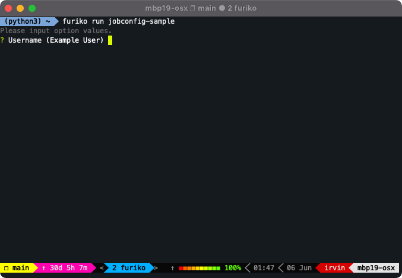

Adhoc Execution
This page will discuss how to run once-off, or adhoc Job executions. An adhoc Job is one that is not scheduled automatically (e.g. from a cron schedule), but rather started explicitly (such as via user creation or external triggers).
Using the CLI
The easiest way to run an adhoc Job execution is to use the furiko CLI tool:

It is recommended to use furiko run, which supports the following features:
- Interactive prompt for option values (suppress with
--use-default-options) - Specify future timestamp to start after (with
--at)
Creating a Job from a JobConfig
A Job is typically created from a JobConfig, since the JobConfig controller groups together multiple Job objects and controls their lifecycle and behavior.
configName
To create a Job from a JobConfig, the simplest way is to specify the configName of a JobConfig in the same namespace:
apiVersion: execution.furiko.io/v1alpha1
kind: Job
metadata:
generateName: jobconfig-sample-
spec:
configName: jobconfig-sample
optionValues: |-
username: bob
The webhook is responsible for transforming the Job creation request, so that all fields will be populated from the JobConfig. The end result would be the following, extremely comprehensive Job configuration. Some fields are explained below.
Example: Final Result after transforming Jobs with configName
apiVersion: execution.furiko.io/v1alpha1
kind: Job
metadata:
annotations:
# Internal annotation used to "snapshot" the JobOptionsSpec of the JobConfig.
execution.furiko.io/options-spec-hash: 91305051fc67f709
creationTimestamp: "2022-03-15T07:35:21Z"
finalizers:
# This finalizer is needed by the JobController.
- execution.furiko.io/delete-dependents-finalizer
generateName: jobconfig-sample-
generation: 1
labels:
# Internal label used to identify owner JobConfig.
execution.furiko.io/job-config-uid: cd346c6f-4493-42b5-a813-8787a68ec74c
name: jobconfig-sample-p8fzq
namespace: default
# Owner reference of JobConfig controller.
ownerReferences:
- apiVersion: execution.furiko.io/v1alpha1
blockOwnerDeletion: true
controller: true
kind: JobConfig
name: jobconfig-sample
uid: cd346c6f-4493-42b5-a813-8787a68ec74c
resourceVersion: "585289534"
uid: f02bf84c-ab06-4121-9c7f-be50ff61de72
spec:
type: Adhoc
optionValues: '{"username":"bob"}'
startPolicy:
# Inherited from the JobConfig's concurrency.policy.
concurrencyPolicy: Forbid
substitutions:
# Addition of jobconfig context variables.
jobconfig.cron_schedule: H/15 * * * *
jobconfig.name: jobconfig-sample
jobconfig.namespace: default
jobconfig.timezone: Asia/Singapore
# Evaluted option variables.
option.image-tag: latest
option.username: Example User
# Inherited from the JobConfig's spec.template.
template:
maxAttempts: 1
taskTemplate:
pod:
metadata: {}
spec:
containers:
- args:
- echo
- Hello world, ${option.username}!
env:
- name: JOBCONFIG_NAME
value: ${jobconfig.name}
- name: JOB_NAME
value: ${job.name}
- name: TASK_NAME
value: ${task.name}
image: alpine:${option.image-tag}
name: job-container
resources:
limits:
cpu: 100m
memory: 64Mi
restartPolicy: Never
ttlSecondsAfterFinished: 3600
optionValues
When creating a Job from a JobConfig, you can also specify optionValues which declares the value for each option defined in the JobConfig's Job Options.
The optionValues must be a YAML or JSON encoded string of a map from the option's name to the corresponding value. The value may be of any admissible type, depending on the option's `type.
apiVersion: execution.furiko.io/v1alpha1
kind: Job
metadata:
generateName: jobconfig-sample-
spec:
configName: jobconfig-sample
optionValues: |-
# String and Select options accept only strings.
# Numbers or booleans must be quoted in YAML.
configName: default-config
userCount: "3"
# Multi options accept a list of strings.
userList:
- mary
- bob
- alice
# Bool options accept a boolean value.
verbose: true
If not specified in optionValues, the default value (if any) from the JobConfig will be used. Otherwise, if it is also required, a validation error will be thrown if there is no default and not explicitly defined in optionValues.
After evaluation, the final rendered values will be stored inside substitutions. See the previous section for a full example.
Concurrency
When creating a Job from a JobConfig, it is still subject to the JobConfig's concurrency policy. The startPolicy automatically inherits the JobConfig's concurrency.policy if not defined.
However, you can also explicitly specify startPolicy.concurrencyPolicy in the Job's spec, so that it does not follow the JobConfig's actual policy:
apiVersion: execution.furiko.io/v1alpha1
kind: Job
metadata:
generateName: jobconfig-sample-
spec:
configName: jobconfig-sample
startPolicy:
concurrencyPolicy: Enqueue
Assuming the JobConfig uses Forbid, this effectively allows us to schedule an adhoc execution after all currently running Jobs are completed.
Info
Explicitly specifying startPolicy.concurrencyPolicy in a Job may be a violation of the JobConfig's intended behavior, especially if the Job sets it to Allow even though the JobConfig uses Forbid. Use this with caution.
Scheduling Adhoc Future Executions
Jobs can also be started in the future, rather than starting immediately upon creation. You can create a Job with startAfter as follows:
apiVersion: execution.furiko.io/v1alpha1
kind: Job
metadata:
generateName: jobconfig-sample-
spec:
configName: jobconfig-sample
startPolicy:
concurrencyPolicy: Enqueue
startAfter: 2022-03-06T00:27:00+08:00
For more details, see Start Policy.
Independent Jobs
It is also possible to run Jobs without a JobConfig. However, this is not recommended as it would disable the features mentioned above, including the ability to use optionValues and enforcing concurrency policies.
In such a case, you have to explicitly specify the template of the Job yourself. For an example, see Sample Configuration.